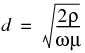

AWG
American Wire Gauge. AWG is sometimes known as Brown and Sharpe (B&S) Wire Gauge. A gauging system used to size magnet wire.
bobbin
The injection molded form upon which the coil is wound on many cores and laminations.
breakdown
Breakdown of a insulation material in the voltage applied per unit length that will
breakdown strength
It is the maximum electric field strength that a material can withstand and still function like an insulator. Breakdown strength of an insulator material is measured in Volt per millimeter.
CEIL(x)
Ceiling value of x, is the nearest integer greater than x.
coercive force, Hc
The value of demagnetizing force that reduces residual induction to zero. The maximum coercive force, as measured on a saturated magnet, is proportional to the remanent flux density. It is expressed in oersteds or kiloAmps per meter (kA/m).
core loss
Core loss is the power loss or heat generated by a magnetic material subjected to an alternating magnetic field. It is measures in Watts. Core loss for a material changes with change in the operating frequency and operating flux density. Therefore, this information is critical for selecting a part.
FFC
Fringing flux coefficient (FFC) is the measure of how much flux redistributes when magnetic lines pass from a high permeability material (ferrite core) to a low permeability material (air gap).
FLOOR(x)
FLOOR(x), is the nearest integer smaller than x.
fringing field
The magnetic field associated with the divergence of the magnetic flux lines from the shortest path between two poles in a magnetic circuit.
fringing flux
When you have an air gap in the magnetic path length, the magnetic flux bulges at the air-gap. This bulging flux, which increases the effective area of the air gap to a value greater than the core cross-section area, is called fringing flux. Flux redistribution occurs whenever flux lines pass from a high permeability into a lower permeability material.
impedance
The effective electrical resistance that inductors, capacitors, and resistors present to current flow in a circuit.
inductance factor (AL)
Core constant used to calculate inductance based on the number of winding turns squared. Value is given in millihenries per 1000 turns squared, which is the same as nanohenries per turn squared
leakage flux
Flux linking to the winding that does not pass through the magnetic path length. measured using leakage inductance.
leakage inductance
The inductance associated with the leakage flux of a core coil.
litz wire
A type of wire that consists of multiple strands of wire are used in parallel to form a single conductor. Litz wires reduce skin effect and offers advantages over single strand at high frequency.
magnetics
Passive components, such as transformers and inductors, that use an internal magnetic field to change the phase of electrical current.
Magnetic Path Length, MPL
The length of the closed path that magnetic flux follows around a magnetic circuit. Magnetic path length (MPL) is determined by the Ampere's Law.
Permeability
The ratio of the ability of a material to carry magnetic flux in comparison to air or a vacuum, the permeability of which is, by definition, one.
skin effect
Skin effect is the tendency of radio frequency current to be concentrated at the surface of the conductor.
skin depth
Depth below the surface of the conductor at which the current is 1/e (about 0.37) times the current at the surface. Calculated using the formula given below.

where
ρ = resistivity of conductor
= 1.67x10-5 Ohm-mm for copper
ω = angular frequency of current
= 2π × frequency in MegaHertz
µ = absolute magnetic permeability of conductor
= 1 for copper
SWG
Imperial Standard Wire Gauge, (British legal standard)
transformer
An electrical device that transfers energy from one electrical circuit to another by magnetic coupling with no moving parts. It is often used to convert between high and low voltages and accordingly between low and high currents.
voltage regulation
It is the measure of how well a power transformer can maintain constant secondary voltage given a constant primary voltage and wide variance in load current. The lower the percentage (closer to zero), the more stable the secondary voltage and the better the regulation it will provide.
Inductance because of the leakage flux.
Watt Density
Wattage concentration on the surface of the core.
wire gauge
It is the measure of the bare copper (without insulation) cross-section area of a wire.